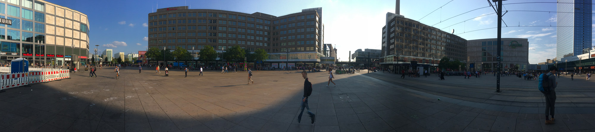

Une évolution de la perception auditive
Matisse Vrignaud, 2018
Enregistrements & références
Panoramas
P1 Tempelhof 13:20
P2 Herrfurthplatz 13:45
P3 Karl Marx Straße 14:05
P4 Alexanderplatz 17:15

P5 Potsdamer Platz 18:00
P6 Görlitzer Park 18:50
P7 KOTBUSSER TOR 20:05
Références audio
Références vidéo
Music Land
Berlin, symphonie d’une grande ville